DIASCALDUM2009
Inicio
Programa
Eventos
Ubicación
Jornadas

Chat Días Caldum
Participa en nuestras conversaciones durante las ponencias
Página de inicio
Jornadas Software Libre
Notas de prensa
Organización
Colaboradores
Eventos
Retransmisión en directo
Chat de la conferencia
Zona Wifi/EduRoam